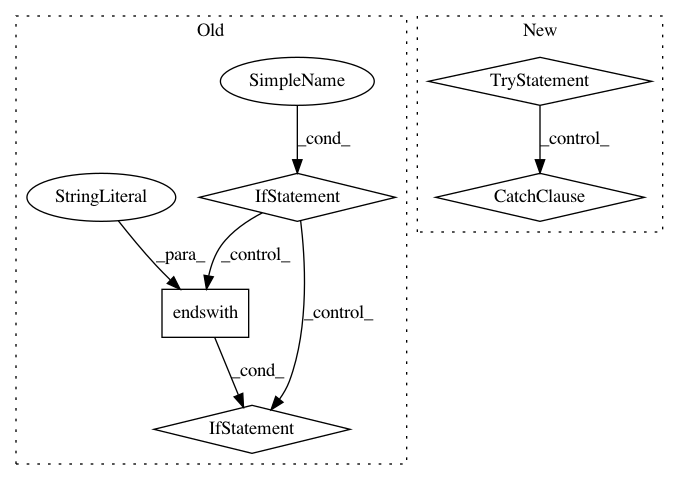

dfae0dae92e64b05a2dd129a4ad46ab53b7aa0fa,dino/utils/__init__.py,,ban_duration_to_timestamp,#Any#,341
Before Change
def ban_duration_to_timestamp(ban_duration: str) -> str:
if ban_duration is None or ban_duration == "":
raise ValueError("empty ban duration")
if not ban_duration.endswith("s") and not ban_duration.endswith("m") and not ban_duration.endswith("d"):
raise ValueError("invalid ban duration: %s" % ban_duration)
if ban_duration.startswith("-"):
raise ValueError("can not set negative ban duration: %s" % ban_duration)
if ban_duration.startswith("+"):
After Change
raise ValueError("invalid ban duration, not a number: %s" % ban_duration)
elif ban_duration.endswith("h"):
ban_duration = ban_duration[:-1]
try:
hours = int(ban_duration)
except ValueError as e:
environ.env.logger.error("could not convert ban duration "%s" to int: %s" % (ban_duration, str(e)))
raise ValueError("invalid ban duration, not a number: %s" % ban_duration)
elif ban_duration.endswith("m"):
ban_duration = ban_duration[:-1]
try:
seconds = int(ban_duration) * 60
In pattern: SUPERPATTERN
Frequency: 3
Non-data size: 5
Instances
Project Name: thenetcircle/dino
Commit Name: dfae0dae92e64b05a2dd129a4ad46ab53b7aa0fa
Time: 2016-10-27
Author: oscar.eriks@gmail.com
File Name: dino/utils/__init__.py
Class Name:
Method Name: ban_duration_to_timestamp
Project Name: aws/sagemaker-python-sdk
Commit Name: d2d1cdf874afa7b8aa7f5bf8d764f7b1bd2f9f10
Time: 2020-05-04
Author: chuyangdeng@gmail.com
File Name: src/sagemaker/utils.py
Class Name:
Method Name: _create_or_update_code_dir
Project Name: aertslab/pySCENIC
Commit Name: d23794e515aac062b94c9e492143d97ec55c9cc9
Time: 2018-12-14
Author: vandesande.bram@gmail.com
File Name: src/pyscenic/cli/pyscenic.py
Class Name:
Method Name: aucell_command